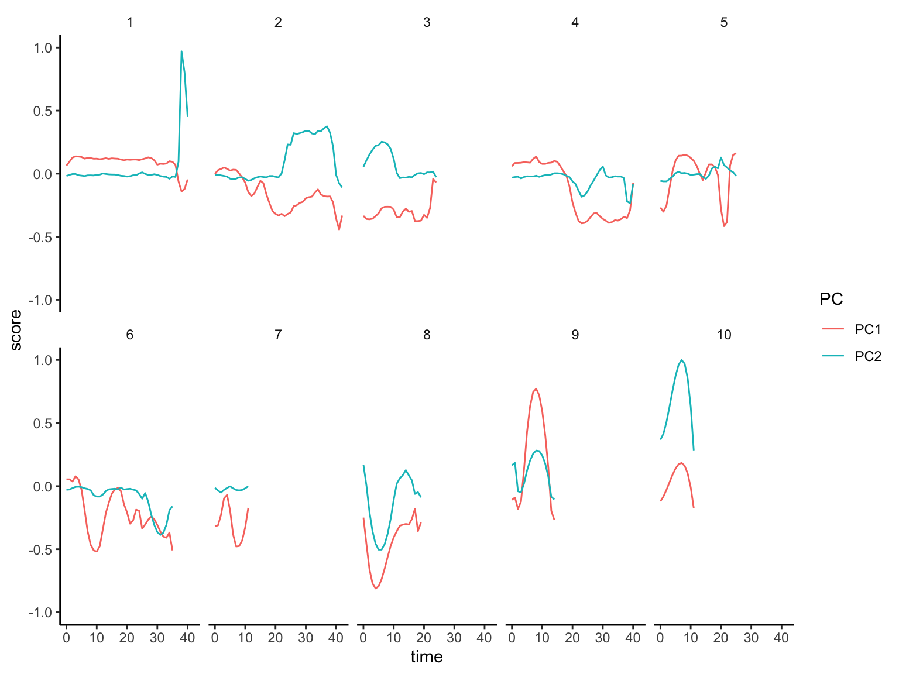

r_OMS_postprocess
Packages
source("R/source.R")
source("R/f_OMS.R")Path
path <- "data/dat_SMPresults_OMP.csv"import
dat_raw <-
path %>%
fread() %>%
as_tibble()over view
- duration & n
dat_duration <-
dat_raw %>%
group_nest(motiftag, motif) %>%
mutate(duration = map_dbl(data, nrow)) %>%
group_nest(motif) %>%
mutate(N = map_dbl(data, nrow)) %>%
arrange(desc(N)) %>%
rowid_to_column("lank") %>%
unnest(data) %>%
mutate(lank = factor(lank))
dat_lank <-
dat_duration %>%
select(lank, motif, N) %>%
distinct()ggplot(data = dat_duration) +
aes(lank, duration) +
geom_boxplot() +
geom_text(data = dat_lank,
aes(y = 8, label = str_c("n=", N))) +
labs(y = "duration (s)", x = "motifid")
- PCs
dat_pca <-
dat_raw %>%
left_join(dat_lank %>% select(!N), by = "motif") %>%
group_by(motiftag) %>%
mutate(time = time - min(time)) %>%
ungroup()
dat_pca_long <-
dat_pca %>%
select(motiftag, motif, lank, time, PC1, PC2) %>%
pivot_longer(
cols = contains("PC"),
names_to = "PC",
values_to = "score"
) %>%
arrange(motiftag, motif, lank, PC, time) %>%
mutate(grp = str_c(motiftag, PC))ggplot(dat_pca_long) +
aes(time, score, color = PC) +
geom_path(aes(group = grp), alpha = 0.2) +
geom_smooth(se = FALSE) +
facet_wrap(~lank, nrow = 2)
inverse PCA
- pca
list_params <-
dat_raw %>%
select(starts_with("x_"),
starts_with("y_"),
starts_with("z_")) %>%
names()
pca <-
dat_raw %>%
select(all_of(list_params)) %>%
prcomp(scale = TRUE)- mean of PCs
dat_pcs_mean <-
dat_pca %>%
select(motiftag, motif, lank, time, starts_with("PC")) %>%
group_by(motif, lank, time) %>%
summarise(across(starts_with("PC"), mean)) %>%
ungroup()dat_pcs_mean %>%
select(motif, lank, time, PC1, PC2) %>%
pivot_longer(
cols = contains("PC"),
names_to = "PC",
values_to = "score"
) %>%
arrange(motif, lank, PC, time) %>%
ggplot() +
aes(time, score, color = PC) +
geom_path() +
scale_y_continuous(limits = c(-1, 1)) +
facet_wrap(~lank, nrow = 2)
- inv PCA
dat_params_raw <-
dat_pcs_mean %>%
select(starts_with("PC")) %>%
inv_pcsscale(pca) %>%
inv_pca(pca) %>%
bind_cols(dat_pcs_mean, .)
write_csv(dat_params_raw,
"data/dat_OMS_invPCA.csv")- visualization
dat_params_xyz <-
dat_params_raw %>%
arrange_xyz() %>%
filter(time <= 30) %>%
rename(sec = time)dat_params_xyz %>%
mutate(x = x + sec * 0.5) %>%
gg_OMS_xy2() +
scale_y_reverse() +
coord_fixed() +
facet_wrap(~lank, nrow = 3) +
scale_x_continuous(breaks = seq(0, 15, by = 5),
labels = seq(0, 15, by = 5) * 2) +
labs(x = "time (s)")